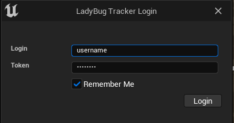
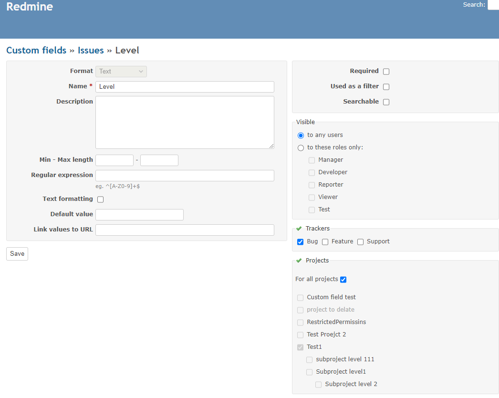
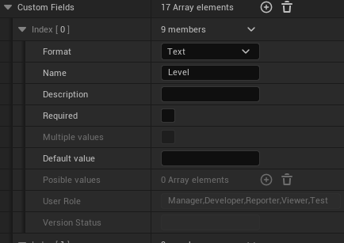

Redmine is an open-source project management and issue tracking software. It provides support for multiple projects, tasks, time tracking, and version control systems. It also allows for the creation of custom reports and integration with numerous other tools.
The Redmine API evolves from version to version, therefore there is no guarantee that a plugin which worked on an older version will function correctly on a later one.
Currently, the supported and only tested version is 4.x.
Version 5.x should theoretically also work, however, this has not been tested.
Redmine integration uses simple login password authentication

LadyBug Tracker requires adding two custom fields to the project: "Level" and "Camera". Both fields must be of type "Text".
To add these fields:
Then, repeat these steps for the "Camera" field.

Due to limitations regarding the ability to fetch Custom Fields definitions from the server, only users with admin accounts can access this data. This information is crucial for the proper functioning of the entire plugin, therefore, these definitions should also be provided in the project settings (under the LadyBug Tracker - Redmine section).
If you do not have admin rights, you must fill in this data manually. However, if you have an admin account, this data is automatically fetched from the server and saved in the project settings. These data are stored in project settings (Config/DefaultBugTracker.ini), allowing you to share them with the entire team.

Unfortunately, not all data can be fetched even with an admin account.
The User Role field (only for fields of type user) must always be filled in manually.
The same goes for the Version Status field for fields of type Version.